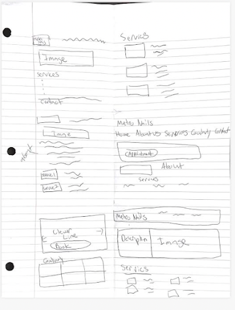
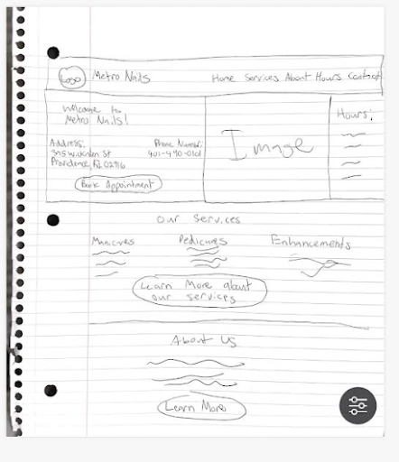
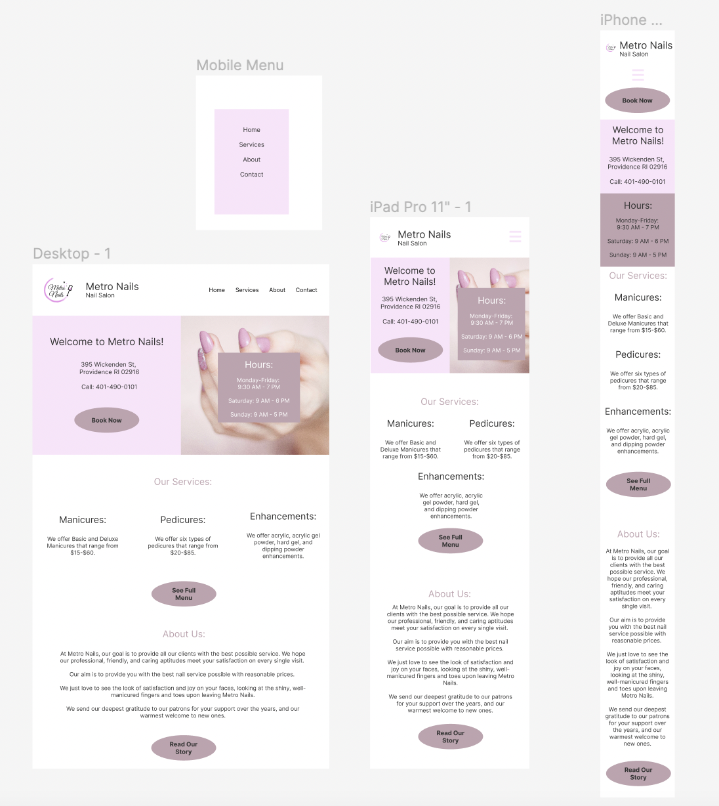

Metro Nails
Overview

Metro Nails is a local Providence nail salon. I was tasked with redesigning their website (note that this is their current website and not my redesigned version). I am a patron of Metro Nails and in the past, I have had trouble using this website to find information. It doesn't make its services, hours, and contact information clear. In addition, the website is not very responsive. Some information on the mobile version is practically unreadable.
Research
Based on my research, this website has quite a few usability problems.
Efficiency
- There is a lot of empty space -- hinders user efficiency because they can't book appointments or find out crucual info on the home page
- There are no hours listed on the home page
Learnability
- Unclear what the price range is of their services because all that is listed are three broad categories
- “Our Services Menu” link leads to nothing
- Lists different services on Home page then on Services page
Memorability
- Because info is in different places, users may not remember where they found the most accurate information last time
- Users may not remember which links work and which links don't
I also discovered some accessibility problems. The WebAIM Wave tool did not work for this site, but the Lighthouse report gave it a score of 89 on accessibility. According to the report, image elements do not have [alt] attributes. In addition, background and foreground colors do not have a sufficient contrast ratio.
Process
Early Designs


First, I sketched out nine options for my design in a round of speed sketching (they aren't super organized, but I tried my best!):
Afterwards, I made a final sketch that incorporated my favorite design elements from some of my sketches. This served as my final base. I am definitly not an artist, but I had fun drawing out my design on a piece of paper.
Figma Mockup
Using Figma, I created a total of three high-fidelity mockups of my page, one for each of the screen sizes (mobile, tablet, desktop).

I made a few bigger changes to the overall content of the original webpage with these designs. First, I eliminated the text about the Gift Cards. I felt that this distracted from the point of the webpage and decided that if I were to redesign the entire website, I would move the Gift Card content to another page. I also added a “Book Now” button that would hypothetically take users to a different page where they could book appointments. This would allow users to quickly reserve an appointment without calling, while also allowing Metro Nails to more easily organize their appointments. Finally, I edited the images featured on the webpage. I eliminated the image of the city because it is not relevant to the business, and I got rid of the service images because I felt they took up space that could have been used to actually describe the services. If I were redesigning the entire website, I would add a gallery of Metro Nails’ finished products on another page.
Redesigned Website
Finally, I moved on to making my redesigned webpage.
Challenges
- I struggled the most with making a hamburger-style menu for the tablet and mobile versions of the website. After doing research online, I was able to get it to work using this really informative YouTube video.
- I discovered once I deployed the website that there were certain elements of my original design that did not have good color contrast, including the text on the business hours menu and the “Our Services” and “About Us” headings. Consequently, those text colors ended up different from my Figma mockup. This taught me that I should be testing accessibility as I am coding, not after I am done. Luckily, after some color correcting, I got my Lighthouse accessibility score up to 100.
- Though my website is pretty responsive and reflects my intended goals outlined in my Figma mockup, the website does start to get less responsive when it gets to around 320px wide, the size of an iPhone SE. However, the website currently works for a normal size iPhone and in the future I will work towards a design that will fit at an even smaller screen.
You can check out my website at this link!

Learnings
I gained skills in:
- the workflow of webiste building
- sketching and figma mockups
- HTML and CSS
- building accessible websites
I appreciated getting to redesign a website that I use often. I am excited to carry the skills I learned from this project onwards to future front-end projects!